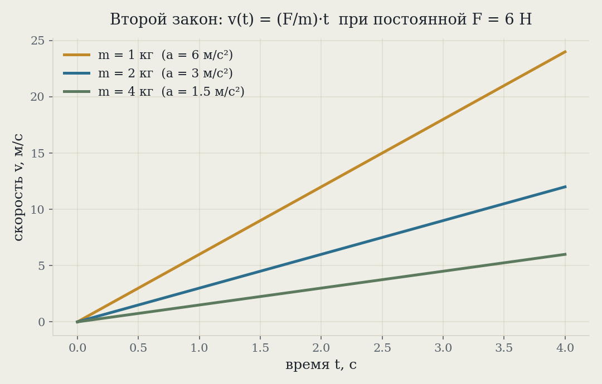
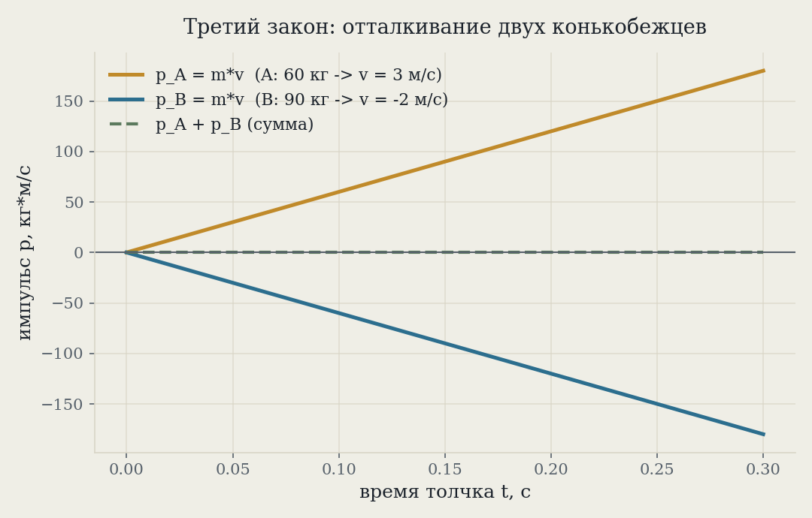

Рабочая заметка · классическая динамика · часть I
Три закона Ньютона: как рождается динамика
Инерция, F = ma и «действие равно противодействию» — не три отдельных факта, а одна связная схема: как посчитать движение тела, если знаешь силы, действующие на него и на его соседей.
Три закона Ньютона (1687, «Математические начала натуральной философии») — минимальный набор аксиом, из которого выводится вся классическая механика: почему тело без сил движется прямо и равномерно, как связаны сила, масса и ускорение, и почему на любое действие есть равное противодействие. В этой заметке — все три закона по отдельности с числовыми примерами и графиками, а затем один сквозной пример (разгон ракеты), где работают сразу все три. Материал рассчитан на тех, кто только начинает динамику: из математики нужна только арифметика и идея производной «на пальцах».
Три закона в двух словах
Ньютон сформулировал три закона, но по сути это одна идея, поданная с трёх сторон: сила меняет движение, и мера этого изменения — масса тела.
| Закон | Формулировка | Что даёт |
|---|---|---|
| I | Тело сохраняет скорость (в том числе нулевую), пока на него не действует нескомпенсированная сила | определяет, что такое «отсутствие сил» |
| II | F = ma | количественная связь силы, массы и ускорения |
| III | FA→B = −FB→A | силы всегда возникают парами между двумя телами |
Первый закон — не частный случай второго при F = 0, а отдельное утверждение: он определяет класс систем отсчёта (инерциальных), в которых второй закон вообще верен в этой простой форме. Порядок в заметке такой же, как исторически и педагогически принятый: сначала что такое «нет сил» (§2), потом что делают силы (§3), потом откуда силы вообще берутся — из взаимодействия тел (§4).
| Величина | Обозначение | Единица СИ |
|---|---|---|
| Сила | F | Н (ньютон = кг·м/с²) |
| Масса | m | кг |
| Ускорение | a | м/с² |
| Скорость | v | м/с |
| Импульс (количество движения) | p = mv | кг·м/с |
| Время | t | с |
| Ускорение свободного падения | g | 9.8 м/с² (у поверхности Земли) |
Первый закон: инерция
Формулировка. Если равнодействующая всех сил, приложенных к телу, равна нулю, тело движется с постоянной скоростью — в частности, покоится, если покоилось. Это утверждение нетривиально: до Ньютона (и Галилея) интуиция была «для движения нужна сила», потому что на Земле всё тормозит трением. Первый закон — идеализация: убери трение и сопротивление воздуха, и шайба, скользящая по льду, катится вечно.
Ключевое слово — равнодействующая. Силы на тело действовать могут, и даже немаленькие — важно, чтобы их векторная сумма была нулевой. Книга, лежащая на столе, испытывает и гравитацию, и реакцию опоры — обе не равны нулю, но уравновешивают друг друга.
Фокус со скатертью: резко выдёргиваешь скатерть из-под сервированной посуды, посуда остаётся на месте. Пока скатерть под тарелкой, трение между ними мало и действует очень короткое время — импульс, переданный тарелке, ничтожен. Как только скатерть выдернута, единственная горизонтальная сила на тарелку исчезает, и по первому закону она просто остаётся там, где была.
Второй важный вывод первого закона — само существование инерциальных систем отсчёта: он выполняется не в любой системе координат, а только в тех, что сами не ускоряются и не вращаются относительно «неподвижных звёзд». Во вращающейся системе (например, в кабине карусели) свободное тело, на взгляд наблюдателя внутри, отклоняется без видимой силы — это и есть сигнал, что система неинерциальна.
Второй закон: F = ma
Формулировка. Равнодействующая сила, приложенная к телу, равна произведению его массы на ускорение — или, точнее и общее, скорости изменения импульса:
Если масса постоянна (не ракета, теряющая топливо, а обычное тело), производная упрощается:
Одна и та же сила F толкает три груза разной массы — тот же расклад, что на Рис. 1: лёгкий вырывается вперёд, тяжёлый отстаёт. Счётчик v — не украшение, а честный live-расчёт по v=at (те же цифры, что в таблице выше на t=2с).
Три точки едут ПО ГРАФИКУ v(t) в реальном времени — та же анимация, что у грузов выше, только как функция, а не как сцена. Наклон прямой = ускорение a.
Масса здесь выступает как мера инертности: чем она больше, тем меньшее ускорение даёт та же сила. Численный пример — тележка массой m на гладком (без трения) горизонтальном столе, к которой приложена постоянная сила F = 6 Н:
| Масса тележки | Ускорение a = F/m | Скорость через 2 с |
|---|---|---|
| 1 кг | 6 м/с² | 12 м/с |
| 2 кг | 3 м/с² | 6 м/с |
| 4 кг | 1.5 м/с² | 3 м/с |

«Сила нужна, чтобы тело двигалось» — нет: сила нужна, чтобы изменить движение (ускорение). Тело, на которое действует постоянная сила, не движется с постоянной скоростью — оно постоянно разгоняется. Постоянная скорость — это F = 0 (первый закон), а не F = const.
Третий закон: действие и противодействие
Формулировка. Если тело A действует на тело B с силой FA→B, то тело B действует на тело A с силой той же величины и противоположного направления:
Размер шарика ~ масса конькобежца, скорость на экране ~ реальная vA/vB из расчёта — тот же расклад, что на Рис. 2.
Частая путаница — считать, что раз силы равны и противоположны, они должны компенсировать друг друга и никакого движения быть не может. Ошибка в том, что FA→B приложена к телу B, а FB→A — к телу A: складывать их во втором законе (ΣF для ОДНОГО тела) нельзя, они действуют на разные объекты.
Числовой пример: два конькобежца массой mA = 60 кг и mB = 90 кг стоят неподвижно и отталкиваются друг от друга руками. Сила взаимодействия в каждый момент одна и та же для обоих (третий закон) — значит, импульс, переданный каждому (интеграл силы по времени), тоже одинаков по модулю:
Числа подобраны так, чтобы ответ вышел целым (стандартный приём — сначала закон, потом уже конкретные цифры под него). При импульсе толчка J = 180 кг·м/с: vA = J/mA = 180/60 = 3 м/с, vB = −J/mB = −180/90 = −2 м/с — лёгкий конькобежец улетает быстрее тяжёлого, но суммарный импульс системы всё время остаётся нулевым.

Ракета не «отталкивается от воздуха» (в вакууме нет воздуха, а ракеты там прекрасно работают) — она отталкивается от собственного топлива, выбрасывая его назад с высокой скоростью. Сила, с которой ракета выталкивает газ назад, равна по модулю силе, с которой газ толкает ракету вперёд — это и есть третий закон в чистом виде.
Все три вместе: разгон ракеты
Соберём все три закона на одном примере. Ракета массой m = 1000 кг стоит на пусковой площадке.
- Первый закон объясняет, почему она вообще неподвижна: сила тяги двигателей пока равна нулю, а гравитация уравновешена реакцией опоры — равнодействующая нулевая, скорость остаётся нулевой.
- Двигатели запускаются и выбрасывают газ назад с силой реакции F = 15000 Н, направленной вверх — это прямое следствие третьего закона: газ толкает ракету с той же по модулю силой, с которой ракета толкает газ.
- Пока масса ракеты примерно постоянна (в первые секунды сожжено мало топлива), второй закон даёт её ускорение: сила тяги минус вес.
По мере выгорания топлива масса m в знаменателе падает, и при той же тяге ускорение растёт — отсюда характерное «увеличивающееся» ускорение настоящих ракет на старте, которое здесь для простоты не учитывается (это следующий уровень задачи, где уже нельзя считать m постоянной и нужна полная форма (1)).
Куда это ведёт: принцип наименьшего действия
F = ma — не самая фундаментальная формулировка механики, а её частный (хоть и самый практичный) случай. Есть более общее утверждение, из которого все три закона Ньютона выводятся, а не постулируются: тело движется так, чтобы величина, называемая действием S, была стационарна (в простых случаях — минимальна) на реальной траектории по сравнению с любой другой мыслимой траекторией между теми же двумя точками:
Применение вариационного исчисления (уравнение Эйлера–Лагранжа) к (4) для обычной частицы в потенциальном поле даёт ровно второй закон Ньютона — не приближённо, а тождественно. Но формулировка через действие работает и там, где «сила» — неудобное или вовсе отсутствующее понятие (общая теория относительности, квантовая механика через интеграл по траекториям Фейнмана), поэтому она, а не F = ma, — рабочий язык современной теоретической физики.
Теорема Нётер (1918) связывает это с §4 напрямую: каждой непрерывной симметрии действия (4) отвечает свой закон сохранения. Однородность времени (законы физики не меняются от момента к моменту) даёт сохранение энергии; однородность пространства (сдвинь эксперимент на метр влево — результат тот же) даёт сохранение импульса — то есть закон сохранения импульса из §4 не отдельный факт, а следствие того, что пространство однородно. Изотропность пространства (нет выделенного направления) точно так же даёт сохранение момента импульса.
Здесь механика соприкасается с философией — не случайно, а исторически: сам принцип впервые сформулировал в 1740-х Пьер-Луи Мопертюи как телеологический — природа «экономна» и действует с минимальными затратами, почти замысел. Современное прочтение (после Фейнмана) — не телеологическое: частица не «выбирает» лучший путь заранее, а реально проходит все мыслимые пути одновременно, и они складываются (интерферируют) так, что в классическом пределе выживает именно путь стационарного действия. Тем не менее вопрос «почему природа вообще устроена как задача оптимизации» остаётся открытым и обсуждается уже философией физики, а не только самой физикой — соединение теорфизики, математики вариационного исчисления и философии науки здесь неразделимо.
На сайте это отдельные законы, если хочется пройти глубже:
Принцип наименьшего действия · Теорема Нётер · Закон сохранения импульса · Закон сохранения энергии
Задачи для проверки
Сначала подумайте сами, затем откройте решение — раскрывающийся блок под условием. Числа во всех задачах подобраны так, чтобы ответ выходил целым (стандартный приём для учебных задач: сначала фиксируется закон, а уже под него подгоняются удобные данные) — считать можно в уме, без калькулятора. Решение везде идёт по одной и той же схеме: Дано → Закон → Решение → Ответ.
1. Тело массой 3 кг разгоняется из состояния покоя силой 9 Н по гладкой поверхности. Найдите скорость через 4 с и пройденный путь.
Дано m = 3 кг, F = 9 Н, t = 4 с, v0 = 0.
Закон второй закон Ньютона (a = F/m) + кинематика равноускоренного движения (v = at, s = ½at²).
Решение a = 9/3 = 3 м/с²; v = 3·4 = 12 м/с; s = ½·3·4² = 24 м.
Ответ v = 12 м/с, путь = 24 м.
2. Почему в невесомости (на орбитальной станции) космонавт, оттолкнувшись от стены, продолжает лететь по прямой с постоянной скоростью, пока не встретит противоположную стену? Какой закон это описывает и почему условие для него там выполнено особенно точно?
Закон первый закон Ньютона (инерция, §2).
Решение равнодействующая сил на свободно летящего космонавта равна нулю — гравитация есть, но станция и космонавт падают в ней вместе (это и есть невесомость, а не «отсутствие гравитации»), значит по первому закону скорость постоянна. Условие выполнено точнее, чем на Земле, потому что нет сопротивления воздуха и трения о поверхность — единственных сил, которые на Земле мешают наблюдать инерцию в чистом виде.
Ответ первый закон; условие «нет сил» там ближе к идеальному, чем на Земле.
3. Человек массой 60 кг прыгает с неподвижной лодки массой 90 кг на берег, придав себе горизонтальную скорость 3 м/с. С какой скоростью откатится лодка?
Дано mчел = 60 кг, vчел = 3 м/с, mлодки = 90 кг, суммарный импульс системы до прыжка = 0.
Закон сохранение суммарного импульса (§4, тот же приём, что для конькобежцев): 0 = mчелvчел + mлодкиvлодки.
Решение vлодки = −mчелvчел/mлодки = −60·3/90 = −2 м/с.
Ответ 2 м/с, в сторону, противоположную прыжку.
4. Тягач тянет два одинаковых прицепа массой 2000 кг каждый, соединённых последовательно, с общим ускорением 1 м/с². Найдите силу натяжения сцепки между первым и вторым прицепом.
Дано m2 = 2000 кг (второй, задний прицеп), a = 1 м/с².
Закон второй закон Ньютона, применённый отдельно к ВТОРОМУ прицепу — единственная сила, действующая на него, это натяжение сцепки T со стороны первого.
Решение T = m2a = 2000·1 = 2000 Н.
Ответ 2000 Н (сцепка тягач↔первый прицеп натянута сильнее — 4000 Н, там нужно тянуть оба прицепа сразу).
5. Мяч бросают вертикально вверх со скоростью 20 м/с. Через сколько секунд он вернётся в исходную точку? (Возьмите g ≈ 10 м/с² — с 9.8 в уме не посчитать.)
Дано v0 = 20 м/с (вверх), g ≈ 10 м/с² (округлили специально, чтобы не считать в столбик).
Закон второй закон Ньютона для свободного падения (единственная сила — тяжесть, a = −g) — время подъёма до высшей точки (v = 0): tвверх = v0/g; полёт вверх-вниз симметричен, полное время = 2tвверх.
Решение tвверх = 20/10 = 2 с; полное время = 2·2 = 4 с.
Ответ 4 с (с точным g = 9.8 вышло бы 4.08 с — округление меняет ответ меньше чем на 2%, а считать не надо).
Опечатка, неверная формула, число не сходится, коряво объяснено — напишите нам: feedback@bridge42worlds.org. Каждое сообщение реально читается, разбирается и по нему вносится правка — это не «в стол».